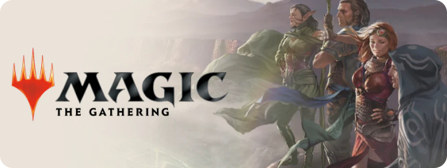

Un p'tit mot sur moi
Designer curieux & intégrateur rigoureux
Après une reconversion réussie dans le webdesign et l'intégration post-pandémie et ayant un attrait pour la création web et digitale, j'ai pu exprimer, au cours de ces dernières années, ma créativité et mon savoir-faire au travers de différentes expériences en start-up, en agence et en ESN.
Mes compétences étant aujourd'hui éprouvées et étant totalement épanoui dans ce que je fais, mon objectif actuel est de faire un 360° sur la création web, afin de pouvoir proposer la création d'un site web depuis sa conception graphique en passant par son intégration, ainsi que tout son branding visuel, pour des projets réalisés de A à Z.
Et tout ceci ne serait pas possible sans mes meilleurs amis : la suite Adobe, Figma ainsi que WordPress !
Mon parcours scolaire
Les formations qui ont construit ma vision du web et du design
Formation complémentaire en développement Low-code No Code effectué chez M2I à Villeneuve-d'Ascq
Validation de mon diplôme d'alternance concepteur/d'interface chez M2i Formation à Villeneuve-d'Ascq
Formation intensive en Webdesign UX chez POPSchool Valenciennes
Obtention de mon Master en Culture, événementiel & Numérique à l'UPJV d'Amiens
Mes Hobbies
Ce que je fais quand je ne suis pas derrière Figma
Magic the Gathering
Jeux de cartes réputé pour ça complexité, son sens stratégique et sa tonne de statistiques et de contenu en ligne. Son aspect social, m'a permis de rencontrer des gens merveilleux incroyable.

Jeux vidéo
Collection et pratique de jeu vidéo depuis de nombreuses années (pour m'évader et souffler de temps à autres), c'est une passion qui ne m'a jamais quitté depuis tout petit.